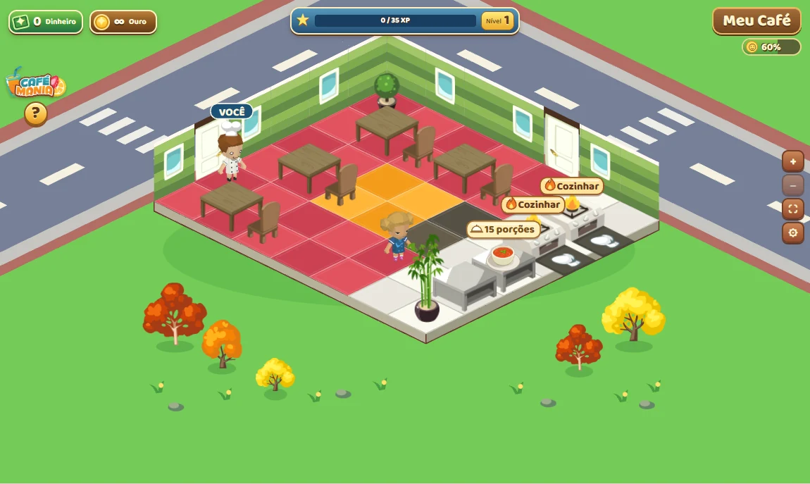
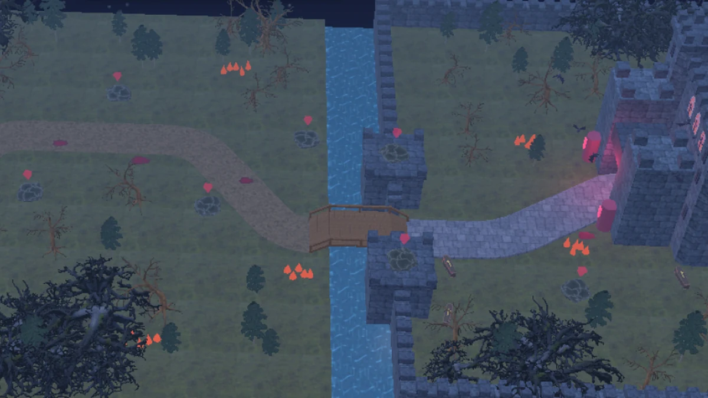
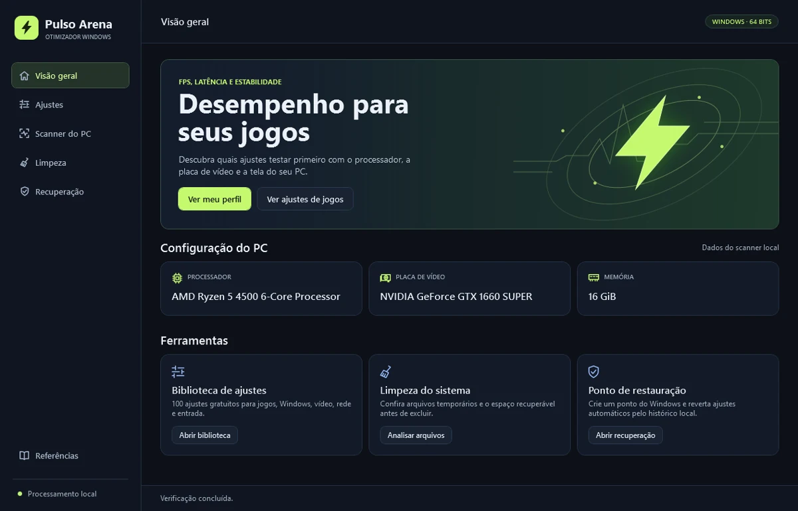
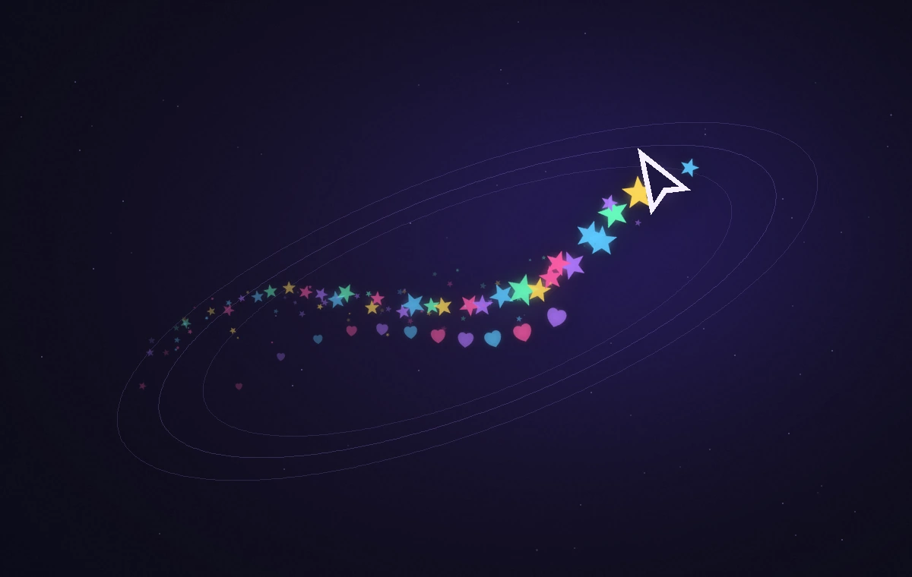

Jogo de gestão
Café Mania

Uma recriação da experiência do Café Mania, com receitas, atendimento e decoração da cafeteria.
Ver projetoJoão Lucas Duque Costa
Desenvolvimento de software, jogos e experiências interativas.
Explorar projetosJogo de gestão

Uma recriação da experiência do Café Mania, com receitas, atendimento e decoração da cafeteria.
Ver projetoTower defense 3D

Defenda o coração de um clã vampiro contra ondas de invasores.
Ver projetoAplicativo Windows

Analise seu PC e encontre ajustes reversíveis para jogar no Windows.
Ver projetoAddon para World of Warcraft

Meu primeiro projeto dá ao cursor um rastro animado de estrelas ou corações no WoW.
Ver projetoSou João Lucas Duque Costa, estudante de Ciência da Computação no IBMR, com formação complementar em Desenvolvimento Full Stack Júnior. Gosto de aplicar o que aprendo em projetos de software e jogos.
Meu GitHub